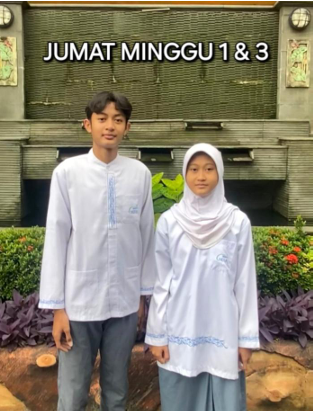
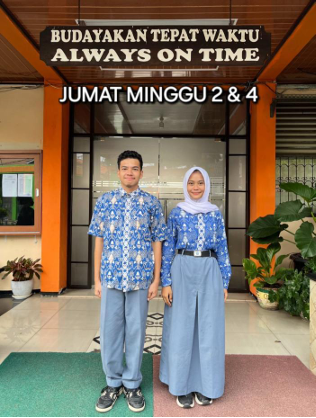

.jpeg)


Untuk menjaga kedisiplinan dan citra sekolah, setiap siswa wajib mengenakan seragam sesuai jadwal dan ketentuan yang berlaku. Berikut adalah detail seragam harian:
Senin & Selasa: Putih Abu-Abu (Lengkap)
Seragam nasional (Putih Abu-Abu). Lengkap dengan atribut, dasi, dan topi.
- Pria: Kemeja Putih lengan pendek, celana panjang abu-abu, ikat pinggang, kaos kaki putih, sepatu hitam.
- Wanita: Kemeja Putih lengan panjang/pendek, rok panjang/pendek abu-abu, ikat pinggang, kaos kaki putih, sepatu hitam.
Rabu & Kamis: Seragam Pramuka
Seragam Pramuka lengkap dengan atribut, setangan leher, dan baret (jika diwajibkan).
- Ketentuan seragam Pramuka mengikuti aturan Kwartir Nasional.
Jumat: Seragam Khusus (Mingguan)
Jumat dibagi berdasarkan minggu berjalan, dengan penyesuaian untuk siswa Muslim dan Non-Muslim:
Jumat Minggu Ke-1 & Ke-2: Seragam Khas Sekolah & Muslimah/Non-Muslimah
Seragam Khas Sekolah (contoh: Putih-Biru/Hijau) & Seragam Muslimah/Non-Muslimah sesuai ketentuan sekolah.
- Muslim Pria: Kemeja Khas Sekolah, celana, peci, atau pakaian muslim.
- Muslim Wanita: Pakaian Muslimah lengkap (gamis/rok panjang dan kerudung), warna disesuaikan.
- Non-Muslim: Seragam Khas Sekolah.
Jumat Minggu Ke-3 & Ke-4: Seragam Batik
Seragam Batik sekolah resmi. Bawahan tetap abu-abu.
- Batik: Lengan panjang/pendek (Pria), Lengan panjang/pendek (Wanita).
- Bawahan: Celana/Rok Abu-Abu.
Seragam Olahraga
Dikenakan saat jam pelajaran olahraga. Disimpan rapi di tas setelah selesai.
- Warna dan model wajib sesuai dengan standar yang ditetapkan sekolah.
- Wajib menggunakan sepatu olahraga yang layak.